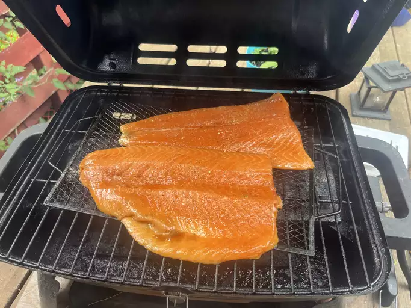

Grilled Salmon

Description
This grilled salmon tastes so good! A simple soy sauce and brown sugar marinade, with hints of lemon and garlic, are the perfect salty-sweet complement to rich salmon fillets. Even my 9-year-old loves this recipe!
Ingredients
- 1 ½ pounds salmon fillets
- lemon pepper to taste
- garlic powder to taste
- salt to taste
- ⅓ cup soy sauce
- ⅓ cup brown sugar
- ⅓ cup water
- ¼ cup vegetable oil
- 1 avocado - peeled, pitted and diced (Optional)
Steps
- Combine ranch dressing, sour cream, 1 teaspoon taco seasoning, and salsa in a small bowl. Cover and refrigerate until serving.
- Toss chicken with remaining taco seasoning. Cover bowl loosely with wax paper or plastic wrap. Microwave chicken until chicken is heated through, about 2 to 3 minutes.
- Warm tortillas in a skillet for about a minute on each side to make them pliable. Place a scoop of chicken on the tortilla and top with lettuce, tomato, green onion, olives, avocado, cheese, and a spoonful of the ranch dressing mixture.